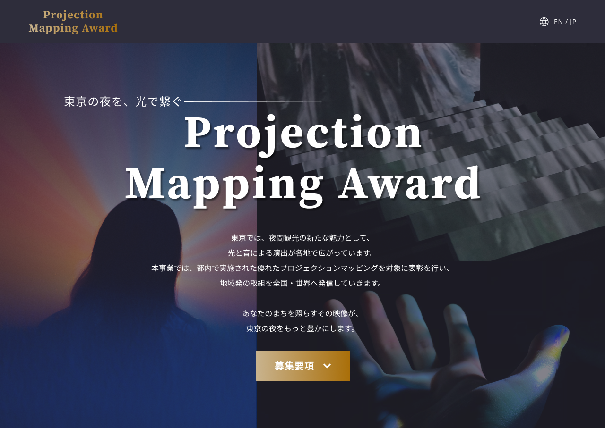
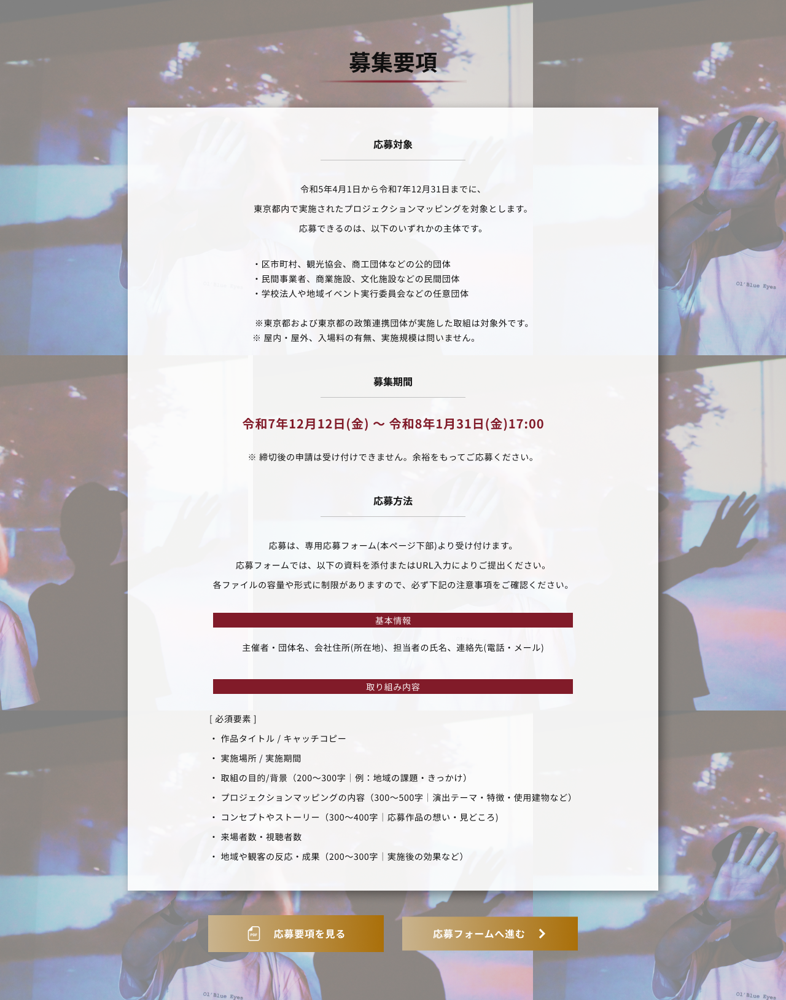
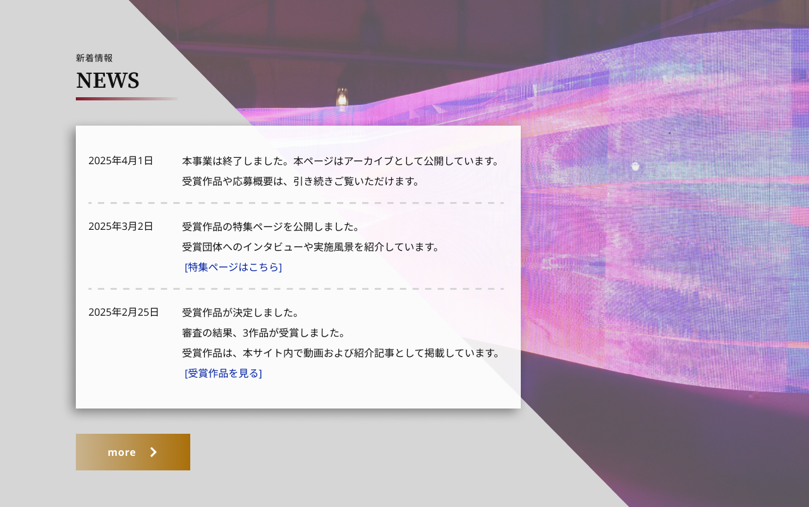
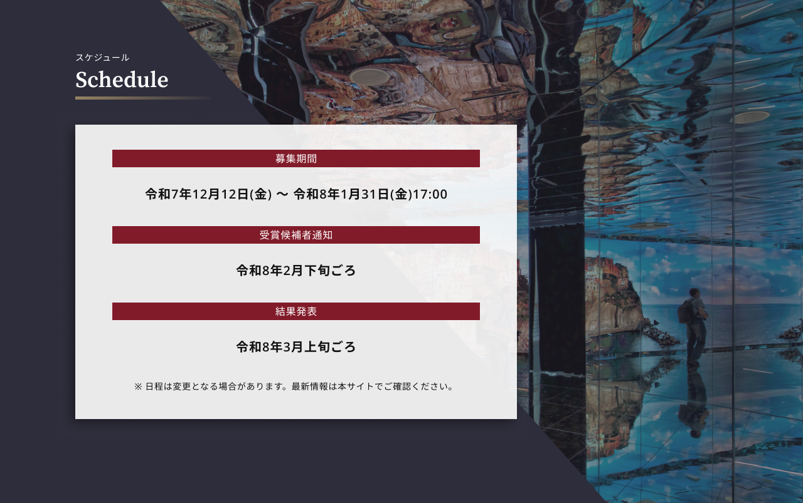

CASE STUDY — 02
観光振興団体が主催するプロジェクションマッピング表彰事業の専用Webサイト制作において、提案用デザインを担当。既存の観光施策サイトの世界観を継承しつつ、募集情報・受賞作品紹介・アーカイブまでを1サイトで完結させる日英バイリンガル対応のサイト設計に取り組みました。ビジュアルデザインと掲載文言（ライティング）を担当しています（本案件は提案段階のもので、公開には至っていません）。

都内で実施されるプロジェクションマッピングを表彰し、東京の夜間観光の魅力向上と国内外からの旅行者誘致を促進する事業です。サイトは単なる募集媒体ではなく、都市景観や光の演出の魅力を視覚的に訴求し、観光振興に資するコンテンツとしての役割が求められました。
既存の観光施策サイトの世界観を継承しつつ、表彰サイトとしての格式を加える必要がありました。また、募集開始時と結果公表時の2フェーズでサイト構成が変わる設計や、全ページ日英バイリンガル対応など、情報設計上の制約も多い案件でした。
先輩デザイナーと分担し、メインページのデザインとサイト全体の掲載文言を担当。デザインアワード系サイトを中心に事例をリサーチし、構成とトーンの方向性を設計しました。
APPROACH
既存サイトのダーク基調・光の表現を引き継ぎつつ、「静けさの中に、東京の創造力を灯す」をコンセプトに、表彰サイトとしての静かな華やかさを加えたトーンを設計。
募集開始時（12月公開）と結果公表時（3月更新）でページ構成が変わる設計に対応。受賞作品紹介・アーカイブページ（ギャラリー／地図表示）を見据えた情報設計を行いました。
コンセプト文・ニュース・応募方法・賞の説明まで、掲載文言のライティングも担当。世界観と情報の明快さを両立させる表現を追求しました。

募集要項

NEWS / 新着情報

スケジュール
世界観と情報の明快さを両立させるデザインに取り組みました。配色・装飾・ライティングまで含めて「トーン」をつくる一連のプロセスを、先輩デザイナーのフォローを受けながら5営業日で完成させました。